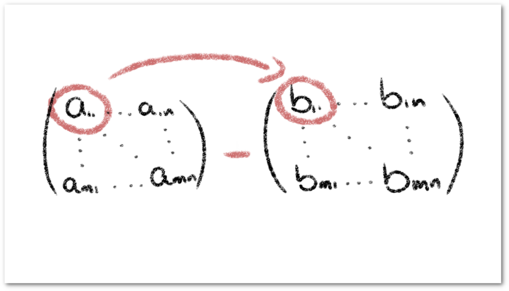
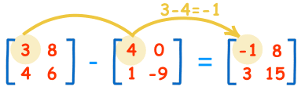

Definición
La resta de matrices es una operación lineal que implica restar los elementos de dos o más matrices que se encuentran en la misma posición dentro de sus respectivas matrices,
siempre que estas matrices tengan el mismo tamaño.
formula

Ejercicio
Teoría de la Resta de Matrices
La resta de matrices es una operación fundamental que se realiza entre dos matrices del mismo tamaño. Para restar dos matrices, se siguen estos pasos:
- Verificar que ambas matrices tengan las mismas dimensiones.
- Restar los elementos correspondientes de cada matriz.
- El resultado es una nueva matriz con las mismas dimensiones que las matrices originales.
Matemáticamente, si A = [aij] y B = [bij], entonces C = A - B se define como:
Calculadora de Resta de Matrices
Matrices 2x2
Matriz A
Matriz B
Matrices 3x3
Matriz A
Matriz B
Aplicaciones de la Resta de Matrices
La resta de matrices tiene numerosas aplicaciones en diversos campos:
- Física: Cálculo de diferencias en campos vectoriales.
- Economía: Análisis de cambios en tablas de insumo-producto.
- Ingeniería: Procesamiento de imágenes y señales.
- Estadística: Cálculo de varianzas y covarianzas en conjuntos de datos multidimensionales.
- Gráficos por Computadora: Transformaciones y animaciones de objetos 3D.